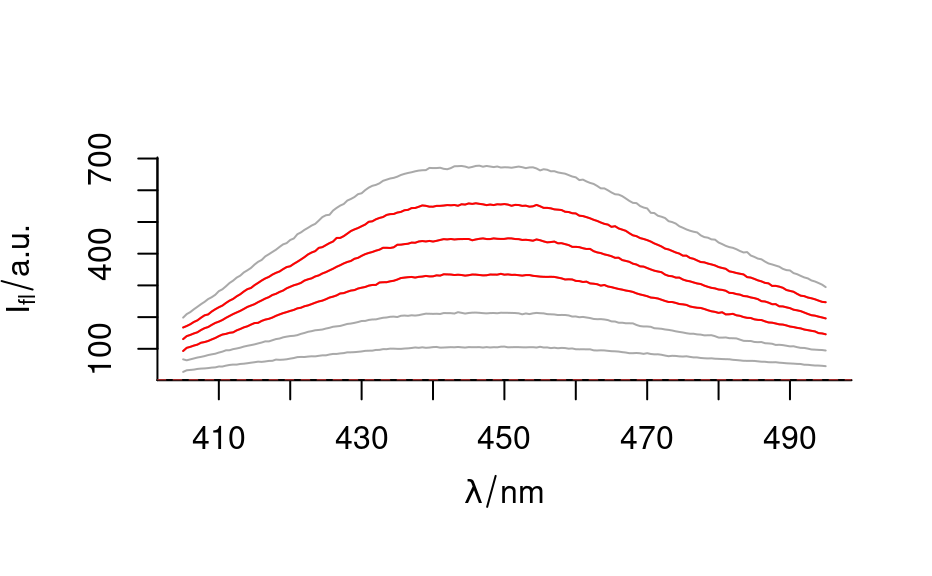
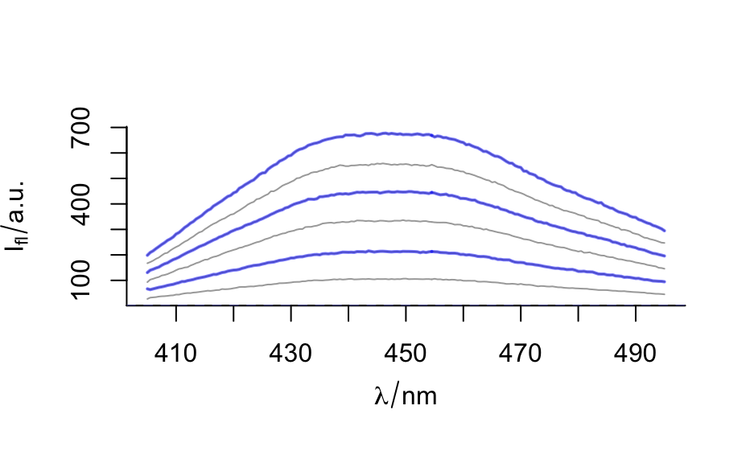

sample() takes a random sample (drawn with or without
replacement) of rows from the object x.
# S4 method for hyperSpec
sample(x, size, replace = FALSE, prob = NULL, index = FALSE)
# S4 method for data.frame
sample(x, size, replace = FALSE, prob = NULL, index = FALSE, drop = FALSE)
# S4 method for matrix
sample(x, size, replace = FALSE, prob = NULL, index = FALSE, drop = FALSE)hyperSpec object, data.frame or matrix to sample rows from.
(integer): Positive integer giving the number of spectra (rows)
to choose. If missing, defaults to the number of rows in the object:
size = nrow(x).
(logical): Should sampling be with replacement?
(numeric): A vector of probability weights for obtaining the elements of the vector being sampled.
(logical): If FALSE, object of class(x) is returned,
if TRUE, numeric vector is returned.
(logical): See base::drop(), by default, do not drop dimensions
of the result. Applicable only if index = FALSE.
If index = FALSE, function returns a hyperSpec object, data.frame or
matrix (object of the same class as x) with size rows.
If index = TRUE, function returns a vector with row indices of size
size suitable for subsetting rows of x.
set.seed(2021)
sample(flu, 3)
#> hyperSpec object
#> 3 spectra
#> 3 data columns
#> 181 data points / spectrum
sample(flu, 3, index = TRUE)
#> [1] 4 6 2
sample(flu, 3, replace = TRUE, index = TRUE)
#> [1] 6 3 6
sample(flu, 8, replace = TRUE, index = TRUE)
#> [1] 6 5 1 4 3 4 2 3
plot(flu, col = "darkgray")
plot(sample(flu, 3), col = "red", add = TRUE)

plot(flu, col = "darkgray")
plot(sample(flu, 3, replace = TRUE),
col = "#0000FF80", add = TRUE,
lines.args = list(lwd = 2)
)

sample(cars, 2)
#> speed dist
#> 37 19 46
#> 22 14 60
sample(cars, 2, index = TRUE)
#> [1] 31 48
sample(matrix(1:24, 6), 2)
#> [,1] [,2] [,3] [,4]
#> [1,] 2 8 14 20
#> [2,] 3 9 15 21
sample(matrix(1:24, 6), 2, index = TRUE)
#> [1] 4 5